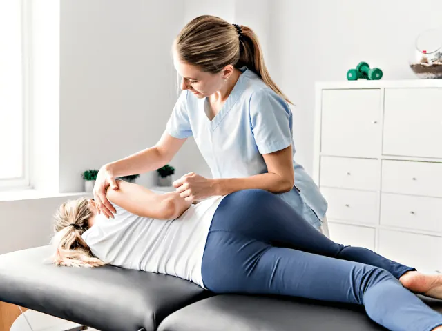
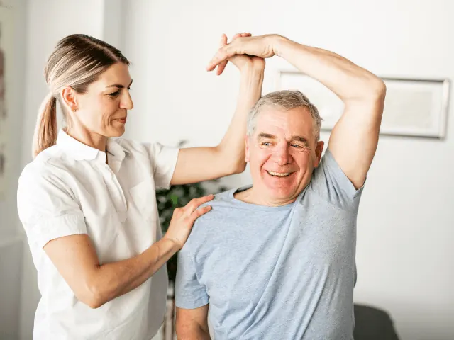
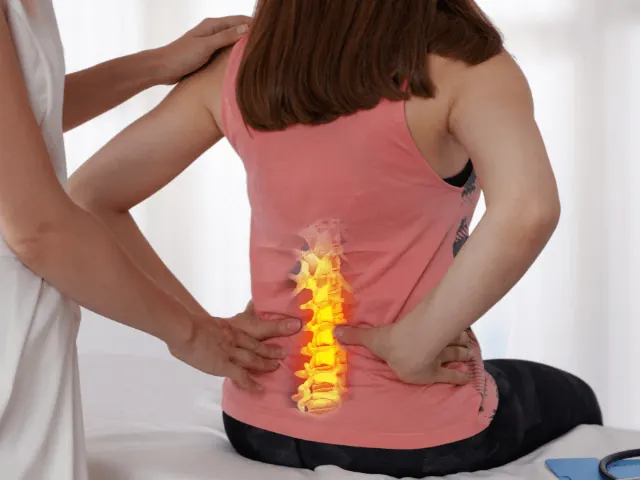

Partnerbijdrage
Voordelen fysiotherapie: Snel herstel met een fysio
Gepubliceerd op 11 mei 2023, bijgewerkt op 26 februari 2024

Fysiotherapie is gericht op het behandelen en verminderen van pijn en het verbeteren van bewegingsmogelijkheden bij klachten. Het kan variëren van het behandelen van sportblessures tot het verminderen van chronische. Als je last hebt van een blessure of pijnklachten, kan het inschakelen van een fysiotherapeut je helpen sneller te herstellen.
Hoe helpt een fysiotherapeut bij het verminderen van pijnklachten?
Pijn kan voor beperkingen zorgen bij het uitvoeren van dagelijkse activiteiten of sporten. Fysiotherapie kan helpen de pijn te verminderen door middel van verschillende behandeltechnieken, zoals massage, mobilisatie en oefeningen. Door het verminderen van pijnklachten, kun je beter functioneren en sneller herstellen. En je leven weer oppakken zoals het voor de klachten was.
Hoe kan een fysiotherapie jouw bewegingsmogelijkheden verbeteren?
Fysiotherapie kan helpen bij het verbeteren van de bewegingsmogelijkheden door middel van het uitvoeren van specifieke oefeningen en technieken. Een fysiotherapeut kan je ook adviseren over hoe je de belasting op de aangedane spieren of gewrichten kunt verminderen, om verdere schade te voorkomen. Door het verbeteren van de bewegingsmogelijkheden, voel jij je weer beter en doe je weer mee.

Op welke manier helpt fysiotherapie bij het bevorderen van de algemene gezondheid?
Fysiotherapie kan ook bijdragen aan de verbetering van de algemene gezondheid. Regelmatige fysiotherapiebehandelingen kunnen helpen bij het voorkomen van blessures en het behouden van een gezonde levensstijl. Fysiotherapie kan ook helpen bij het verbeteren van de houding, het versterken van de spieren en het verminderen van stress. Al met al een interessante overweging.
Hoe fysiotherapie kan helpen bij het voorkomen van terugkerende klachten
Fysiotherapie kan ook helpen bij het voorkomen van terugkerende klachten. Een fysiotherapeut kan je helpen om de oorzaken van de blessure of pijnklachten te identificeren en een behandelplan op te stellen om de klachten in de toekomst te voorkomen. Door regelmatige controles en behandelingen kan je namelijk een terugval van je klachten voorkomen.

Hoe gaat een fysiotherapeut te werk?
Het kan zijn dat je wordt doorverwezen naar een fysiotherapeut via de huisarts, maar je kunt ook zelf contact opnemen met een fysio. We begrijpen dat het fijn kan zijn, om van tevoren te weten wat je staat te wachten. Daarom hebben we uitgeschreven hoe de fysio in de meeste gevallen te werk gaat.
Intakegesprek
De behandeling begint meestal met een intakegesprek. Hierin bespreek je jouw klachten en wordt er naar jouw medische voorgeschiedenis gevraagd. Daarnaast wordt er vaak ook een lichamelijk onderzoek uitgevoerd om de klachten te beoordelen en de oorzaken ervan te identificeren.
Behandelplan opstellen
Op basis van het intakegesprek en het lichamelijk onderzoek stelt de fysiotherapeut een behandelplan voor je op. Dit behandelplan kan bestaan uit verschillende behandelmethoden, zoals oefeningen, massage, mobilisatie of manipulatie.
Behandelingen uitvoeren
De behandelingen worden uitgevoerd in een behandelruimte en zijn gericht op het verminderen van pijn en het verbeteren van jouw bewegingsmogelijkheden. Tijdens de behandelingen kan de fysiotherapeut verschillende technieken toepassen, zoals massage, mobilisatie en oefeningen. De fysiotherapeut kan ook advies geven over hoe je beter omgaat met de belasting op de aangedane spieren of gewrichten om verdere schade te voorkomen. En je moet niet schrikken als je huiswerk meekrijgt, bestaande uit oefeningen om thuis te doen.
Evaluatie
Na enkele behandelingen vindt er vaak een evaluatie plaats om te beoordelen of de behandelingen het gewenste effect hebben gehad. Als de klachten zijn verminderd of verdwenen, kan de fysiotherapeut het behandeltraject afsluiten. Als de klachten nog niet zijn verdwenen, kan de fysiotherapeut het behandelplan aanpassen en doorgaan met jouw behandelingen.
Ben je verzekerd voor een bezoekje aan de fysiotherapeut?
Of je bent verzekerd is afhankelijk van de individuele zorgverzekering of fysiotherapie. In Nederland hebben alle inwoners vanaf 18 jaar een basis zorgverzekering, waarbij in de meeste gevallen een beperkt aantal fysiotherapiebehandelingen wordt vergoed. Als iemand meer behandelingen nodig heeft, kan deze persoon een aanvullende verzekering afsluiten. Het is dus belangrijk om de polisvoorwaarden van de zorgverzekering te raadplegen om te weten welke vergoedingen er gelden voor fysiotherapie. Zeker als je weet dat je lichaam behoefte heeft aan een regelmatig bezoek aan de fysio.
Waar in Nijmegen vind je een goede fysiotherapeut?
In Nijmegen zit in elke wijk wel een goede fysiotherapeut, met veelal hoge beoordelingen. Dus kijk even online waar er eentje bij jou in de buurt zit. Misschien kan jouw huisarts nog een goede fysio adviseren die gespecialiseerd is in jouw klachten. We hopen natuurlijk dat je niet snel een fysio nodig hebt, maar anders wensen we je een spoedig herstel!
Functional fysiotherapie
Functional Fysiotherapie is een moderne praktijk in Nijmegen die gespecialiseerd is in het behandelen van sportblessures en chronische pijnklachten. De therapeuten van Functional Fysiotherapie zijn allemaal hoogopgeleid en hebben jarenlange ervaring in het behandelen van verschillende soorten klachten. Bij Functional Fysiotherapie wordt er gekeken naar het totale plaatje van de patiënt, zodat er een persoonlijk behandelplan kan worden opgesteld. Functional Fysiotherapie maakt gebruik van de nieuwste behandeltechnieken en -apparatuur om de beste resultaten te bereiken. De praktijk heeft een fijne en gastvrije sfeer, waar patiënten zich op hun gemak voelen en optimaal kunnen herstellen.
Fysiotherapie Ysveld Fysio Centrum Nijmegen
Fysiotherapie Ysveld Fysio Centrum Nijmegen is een modern en professioneel centrum dat gespecialiseerd is in het behandelen van verschillende soorten klachten. De therapeuten van Ysveld Fysio Centrum zijn betrokken en deskundig en streven naar de beste resultaten voor hun patiënten. Bij Ysveld Fysio Centrum wordt er gebruik gemaakt van de nieuwste technieken en apparatuur om de behandelingen zo effectief mogelijk te maken. Het centrum biedt verschillende specialisaties aan, waaronder manuele therapie, sportfysiotherapie en bekkenfysiotherapie. De sfeer bij Ysveld Fysio Centrum is persoonlijk en gastvrij, waardoor patiënten zich snel op hun gemak voelen.
Fysiotherapie Jager van der Kamp in Nijmegen Centrum
Fysiotherapie Jager van der Kamp in Nijmegen Centrum is een praktijk waar je terecht kunt voor fysiotherapie, manuele therapie en dry needling. Het team van ervaren therapeuten bij Jager van der Kamp is zeer betrokken en persoonlijk, en helpt patiënten bij het bereiken van hun optimale gezondheid en welzijn. Jager van der Kamp maakt gebruik van de nieuwste technieken en apparatuur om de behandelingen zo effectief mogelijk te maken. Naast het behandelen van klachten, biedt Jager van der Kamp ook preventieve behandelingen en advies aan om toekomstige klachten te voorkomen. De praktijk heeft een fijne en rustige sfeer, waar patiënten zich op hun gemak voelen en optimaal kunnen herstellen.

De fysioo fysiotherapie
Deze moderne praktijk in Nijmegen richt zich op het behandelen van klachten aan het bewegingsapparaat, met een deskundig en betrokken team van therapeuten. Het brede aanbod aan specialisaties, waaronder manuele therapie, sportfysiotherapie en geriatriefysiotherapie, zorgt ervoor dat De Fysioo voor iedereen de juiste behandeling biedt. Bij De Fysioo worden de nieuwste technieken en apparatuur gebruikt om behandelingen zo effectief mogelijk te maken, zodat patiënten snel weer op de been zijn. De persoonlijke en gastvrije sfeer van De Fysioo zorgt ervoor dat patiënten zich snel op hun gemak voelen en optimaal kunnen herstellen. Of je nu een sportblessure hebt, last van rugklachten of andere fysieke klachten, bij deze praktijk ben je in goede handen.
Fysiotherapie Bottendaal
Deze praktijk in het hart van Nijmegen biedt deskundige en persoonlijke fysiotherapie voor allerlei klachten aan het bewegingsapparaat. Met een professioneel team van therapeuten en de nieuwste technieken zorgt Fysiotherapie Bottendaal voor een snelle en effectieve behandeling. Of het nu gaat om revalidatie na een operatie, het herstellen van een sportblessure of het verminderen van chronische pijn, bij deze praktijk ben je aan het juiste adres. De praktijk is gelegen in een gezellige buurt, wat zorgt voor een ontspannen en vertrouwde sfeer tijdens de behandelingen. Fysiotherapie Bottendaal stelt de patiënt centraal en zorgt voor een persoonlijk behandelplan, waardoor je snel weer optimaal kunt bewegen.
Fysius Rugexperts Nijmegen
Deze specialisten in rugklachten zijn gevestigd in het hart van Nijmegen en bieden oplossingen op maat voor mensen met diverse rugklachten. Fysius Rugexperts werkt met een unieke behandelmethode die zich richt op het oplossen van de oorzaak van de klacht en niet alleen op de symptomen. Het team van experts zorgt voor een persoonlijke aanpak en begeleidt patiënten gedurende het hele behandeltraject. Bij Fysius Rugexperts wordt er gebruik gemaakt van moderne apparatuur en technieken om de behandelingen zo effectief mogelijk te maken. Of het nu gaat om een hernia, ischias of andere rugklachten, Fysius Rugexperts biedt een oplossing voor iedereen die graag pijnvrij door het leven wil gaan.
OVERZICHT FYSIOTHERAPEUTEN
BEKIJKFysiotherapie in Nijmegen
Zin om te beginnen? In onze bedrijvengids vind je alle 100 fysiotherapeuten in Nijmegen, met openingstijden, kenmerken en een kaart.
Bekijk alle 100 fysiotherapeuten in Nijmegen
Heb je zelf een fysiotherapeut? Laat je hier uitlichten.